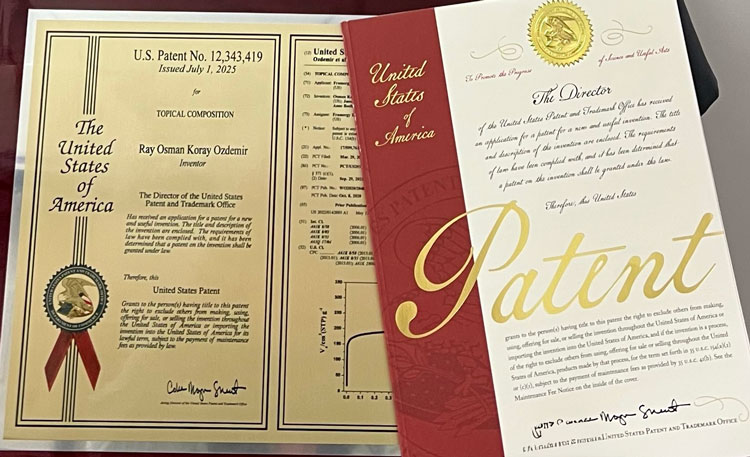

framergy® is advancing the application of Metal-Organic Frameworks (MOFs) and other engineered porous materials in life sciences, with a focus on skin protection, molecular delivery, and regenerative medicine. By leveraging the unique structural properties of MOFs, including high surface area, tunable porosity, and molecular selectivity, framergy is developing innovative material platforms designed to protect biological tissues, stabilize sensitive biomolecules, and enable controlled delivery of therapeutic agents. These technologies offer new opportunities in dermatology, skin cancer prevention, and supportive cancer care.
Founded in 2011 and based in Texas, framergy combines extensive experience in MOF development, manufacturing, and formulation with ongoing research in advanced photoprotection, enzyme stabilization, and therapeutic delivery. Our research includes MOF-based UV filters designed to improve skin protection and capture harmful photochemical byproducts, as well as emerging formulations incorporating photolyase enzymes for DNA repair. In parallel, framergy is investigating programmable MOF-based delivery systems for biologically active molecules, including hydrogen sulfide (H₂S), with potential applications in radiation dermatitis and tissue repair. Through collaborations with leading academic institutions and research partners, framergy is working to translate its patented materials technologies into next-generation life sciences applications.
An emerging Framergy technology platform exploring the integration of advanced porous materials with skin protection, molecular capture, and enzyme-based DNA repair.

U.S. Patent No. 12,343,419 – Topical Composition (2025).
This patented technology reflects framergy’s expanding research into advanced topical formulations, skin protection, and life sciences applications.